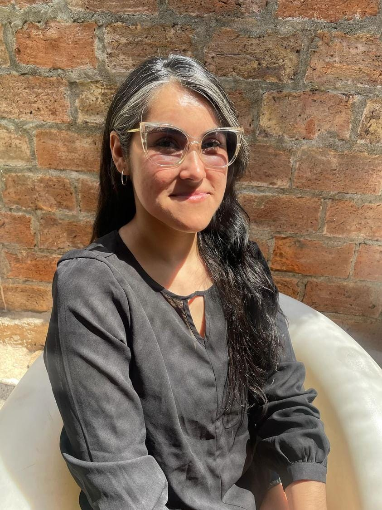

Sandy Cadín Azócar
Product Designer
Santiago de Chile
+569 78178984
cadin.a.sandy@gmail.com

EXPERIENCIA
Ripley, Santiago - Diseñadora UX/UI Senior
Abril 2016 - Noviembre 2023
- Lideré el rediseño de la plataforma de e-commerce
- implementé un sistema de diseño escalable, reduciendo el tiempo de desarrollo.
- Realicé investigación con usuarios utilizando card sorting, test A/B y evaluaciones heurísticas.
- Contribuí en la definición de métricas UX y dashboards de seguimiento.
- Elaboré prototipos y mockups interactivos para equipos multidisciplinarios.
- Participé en talleres de co-creación con stakeholders y usuarios.
EDUCACIÓN
Universidad Gabriela Mistral, Chile - Producción Crossmedia
Marzo 2013 - Diciembre 2015
Profesional capacitado en el desarrollo de contenidos multimedia, con habilidades en gráfica, diseño web, video y animación 3D, orientado a la difusión efectiva de mensajes en múltiples plataformas.
Nuclio Digital School of Barcelona, España - Máster en Diseño UX/UI
Octubre 2023 - Mayo 2024
Diseñador de producto digital integral, enfocado en el usuario y con visión estratégica. Capaz de liderar el ciclo completo de diseño, desde la investigación inicial hasta la validación de prototipos de alta fidelidad, integrando inteligencia artificial y metodologías ágiles.
Desafío Latam, Chile - Desarrollo Front end
Marzo 2026 - Actualidad
Desarrollador Front-end con habilidades en el diseño y desarrollo de interfaces web, utilizando HTML, CSS y JavaScript, con experiencia en el uso de React como framework.
CERTIFICACIONES DESTACADAS
- Google Cloud Platform Fundamentals: Core Infrastructure - Coursera --2021
- Liderazgo Relacional - Universidad Adolfo Ibañez --2021
- Experiencia de Usuario UX - Kibernum --2021
- Hands-on UX Design for Developers - Kibernum --2020
- Comunicación Efectiva - Universidad Adolfo Ibañez --2020
- Agilidad Basada en Scrum - Tecnipro --2019